6.1 ภาพรวม#
เมนู บุคลากร ใช้จัดการรายชื่ออาจารย์ผู้สอนร่วมและผู้ช่วยสอน (TA) ในรายวิชา รวมถึงกำหนดสิทธิ์การทำงานของแต่ละคนอย่างละเอียด ระบบแบ่งสิทธิ์ย่อยออกเป็นหลายหมวด จึงกำหนดได้ว่าผู้ช่วยสอนแต่ละคนทำสิ่งใดได้บ้าง
6.2 ดูรายชื่อและสิทธิ์ของสมาชิก#
เป้าหมายของขั้นตอนนี้ ดูภาพรวมบุคลากรทั้งหมดในรายวิชา และเข้าไปแก้ไขสิทธิ์ของแต่ละคน
- เข้าเมนู จัดการชั้นเรียน แล้วเลือก บุคลากร
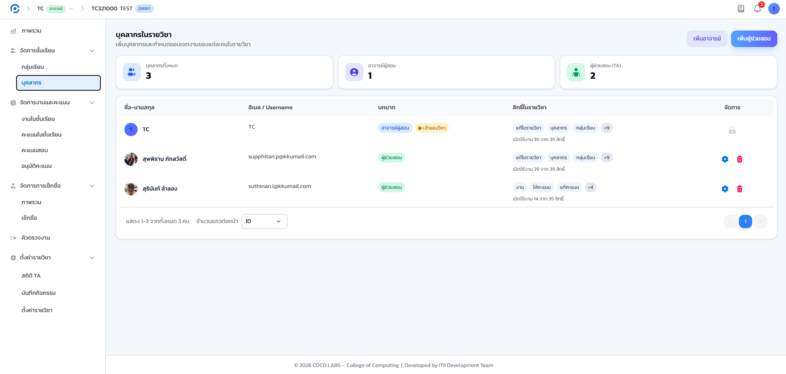
- จำนวนผู้ช่วยสอน (TA)
- สรุปจำนวนบุคลากรทั้งหมดในรายวิชาที่ด้านบนของหน้า
- ป้ายบทบาท
- ระบุว่าแต่ละคนเป็นอาจารย์ผู้สอนร่วมหรือผู้ช่วยสอน แสดงที่แถวของแต่ละคน
- คอลัมน์สิทธิ์ในรายวิชา
- แสดงจำนวนสิทธิ์ที่เปิดใช้งานของแต่ละคน ทำให้เห็นได้ทันทีว่าเหตุใดผู้ช่วยสอนแต่ละคนจึงเห็นเมนูไม่เท่ากัน
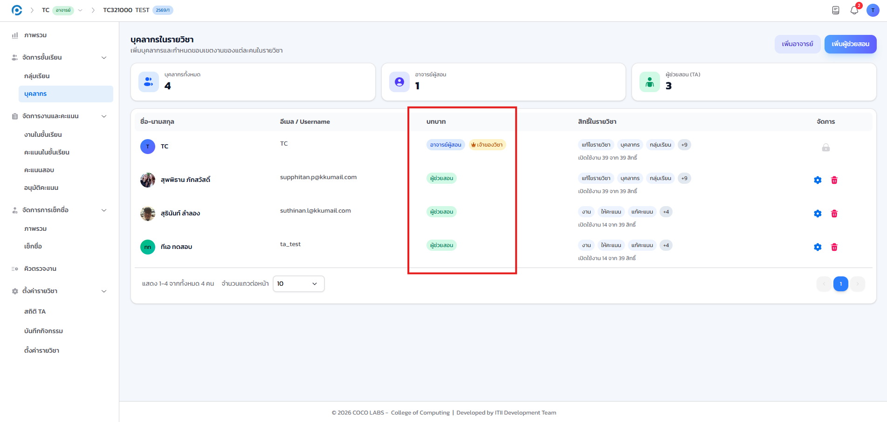
6.3 เพิ่มผู้ช่วยสอน#
เป้าหมายของขั้นตอนนี้ เพิ่มผู้ช่วยสอนเข้ารายวิชา โดยเลือกวิธีที่เหมาะกับสถานการณ์
คลิกปุ่ม เพิ่มผู้ช่วยสอน ที่หน้ารายชื่อบุคลากร ระบบเปิดให้เลือกได้ 2 วิธี ซึ่งใช้ในสถานการณ์ต่างกัน
- ใช้ช่อง ค้นหา พิมพ์ชื่อหรือรหัสของบุคคลที่ต้องการ
- เลือกรายชื่อจากผลการค้นหา เลือกได้มากกว่าหนึ่งคนในครั้งเดียว (multi-select)
- ยืนยันเพื่อเพิ่มเข้ารายวิชา
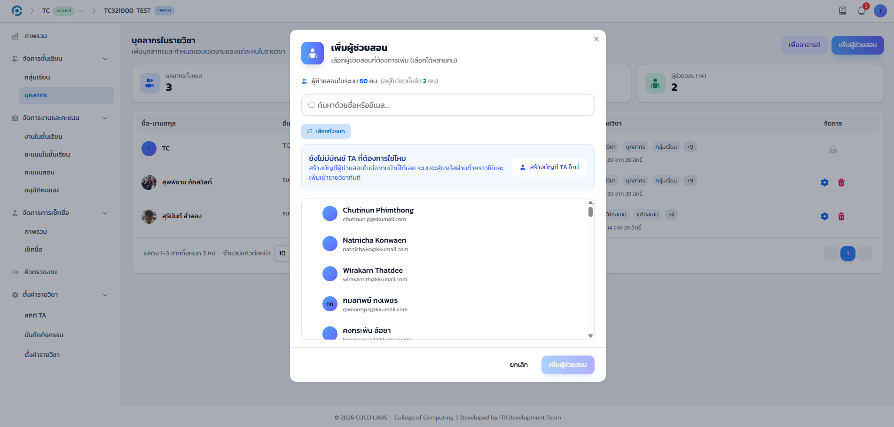
ใช้วิธีนี้เมื่อผู้ช่วยสอนมีบัญชีในระบบอยู่แล้ว เช่น เคยเป็น TA ในรายวิชาอื่นมาก่อน
- สลับไปแท็บหรือโหมด สร้างบัญชีใหม่ ในหน้าต่างเดียวกัน
- กรอกข้อมูลของผู้ช่วยสอน เช่น ชื่อ-สกุลและอีเมล
- ยืนยันเพื่อสร้างบัญชีและเพิ่มเข้ารายวิชาในขั้นตอนเดียว
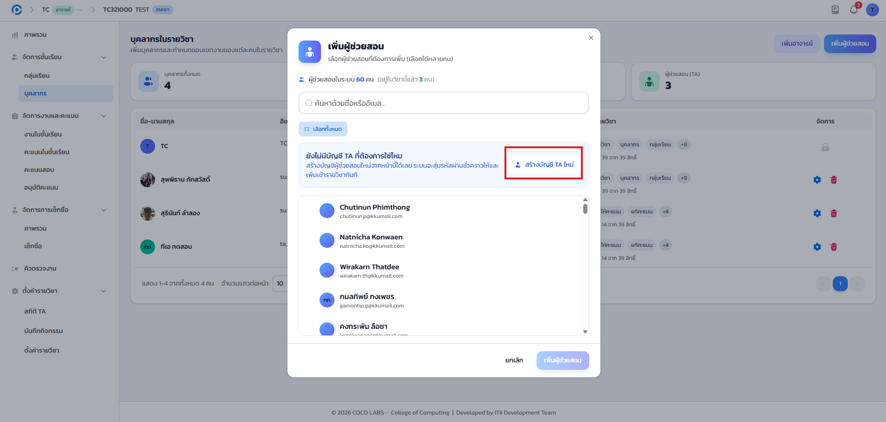
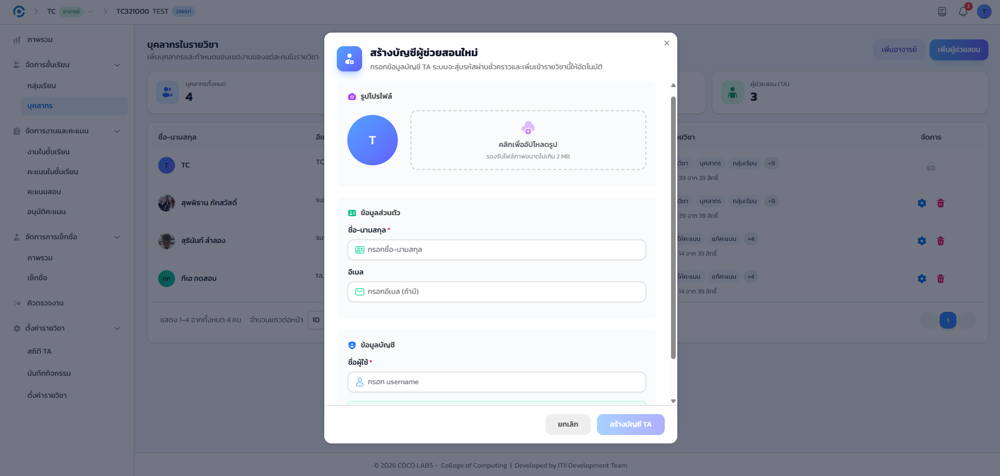
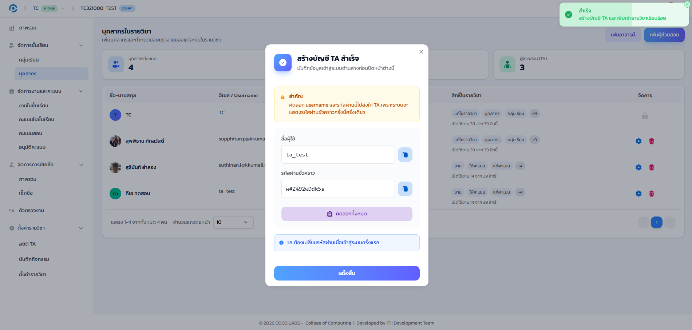
ระบบสร้างรหัสผ่านชั่วคราวให้อัตโนมัติและเพิ่มบุคคลนั้นเข้ารายวิชาทันที กรุณาส่งรหัสผ่านชั่วคราวให้ผู้ช่วยสอนแจ้งช่องทางที่ปลอดภัย เพื่อให้เข้าสู่ระบบครั้งแรกและตั้งรหัสผ่านใหม่ด้วยตนเอง
ก่อนสร้างบัญชีใหม่ กรุณาค้นหาด้วยวิธีที่ 1 ก่อนเสมอ เพื่อป้องกันการสร้างบัญชีซ้ำซ้อนให้บุคคลที่มีบัญชีอยู่แล้วในระบบ
6.4 แก้ไขสิทธิ์ผู้ช่วยสอน#
เป้าหมายของขั้นตอนนี้ กำหนดว่าผู้ช่วยสอนแต่ละคนทำอะไรได้บ้างในรายวิชานี้
- คลิกไอคอนรูปเฟืองที่แถวของผู้ช่วยสอนที่ต้องการแก้ไข ระบบจะเปิดหน้าต่างกำหนดสิทธิ์
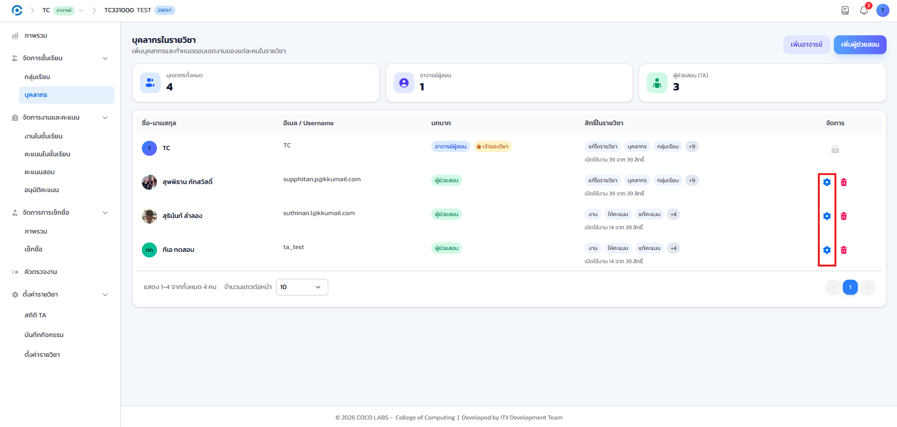
หน้าต่างกำหนดสิทธิ์แบ่งสิทธิ์ย่อยออกเป็น 3 หมวดตามลักษณะงาน
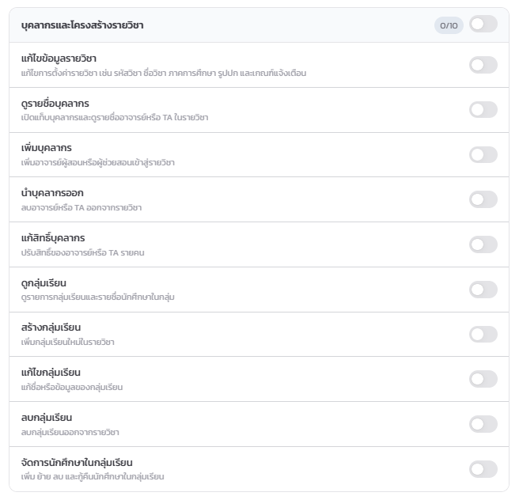
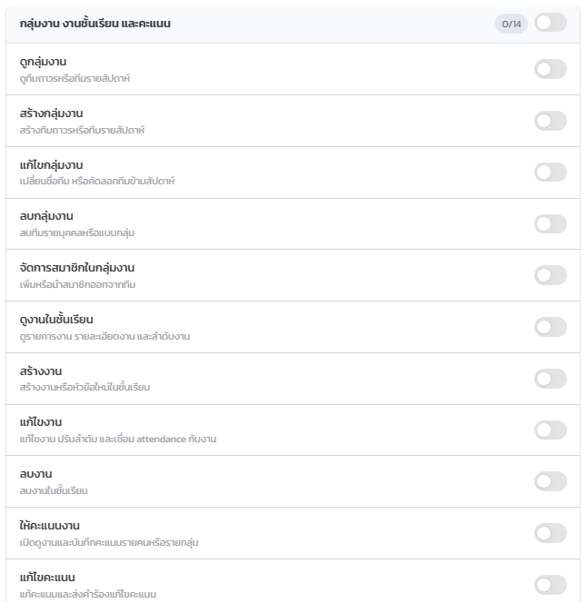
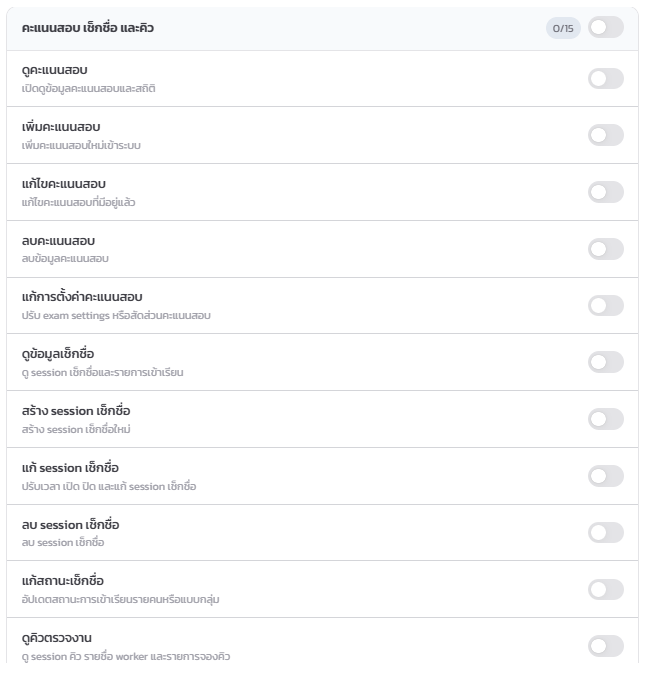
รายการสิทธิ์ย่อยครบทุกข้อพร้อมคำอธิบาย ดูรายละเอียดได้ในหน้าแก้ไขสิทธิ์นี้โดยตรง ไม่ต้องเปิดเอกสารอื่นเพิ่มเติม
6.5 ใช้ชุดสิทธิ์สำเร็จรูป (Preset)#
เป้าหมายของขั้นตอนนี้ กำหนดสิทธิ์เริ่มต้นให้ผู้ช่วยสอนอย่างรวดเร็ว แล้วค่อยปรับรายข้อภายหลังตามต้องการ
- เลือก ชุดสิทธิ์สำเร็จรูป (Preset) ที่ด้านบนของหน้าต่าง เพื่อกำหนดสิทธิ์เริ่มต้นอย่างรวดเร็ว
- ปรับ สิทธิ์รายข้อ เพิ่มเติมได้ตามต้องการ โดยเปิด/ปิดสวิตช์ของแต่ละสิทธิ์
- ดูอย่างเดียว
- เปิดเฉพาะสิทธิ์ดูข้อมูล ไม่สามารถแก้ไขหรือบันทึกสิ่งใด เหมาะกับผู้สังเกตการณ์
- ช่วยสอนปกติ
- เปิดสิทธิ์ทำงานประจำที่ TA ส่วนใหญ่ต้องใช้ เช่น ให้คะแนนและเช็กชื่อ
- ผู้ประสานงานรายวิชา
- เปิดสิทธิ์เกือบทั้งหมด ยกเว้นงานที่สงวนไว้เฉพาะอาจารย์เจ้าของวิชา
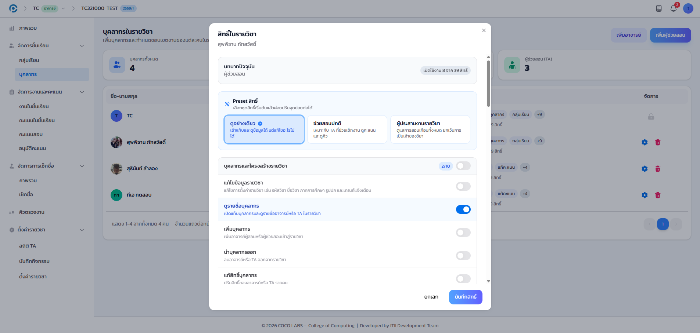
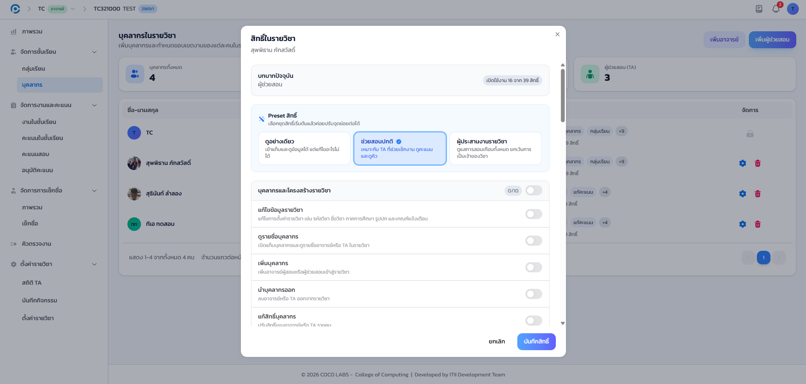
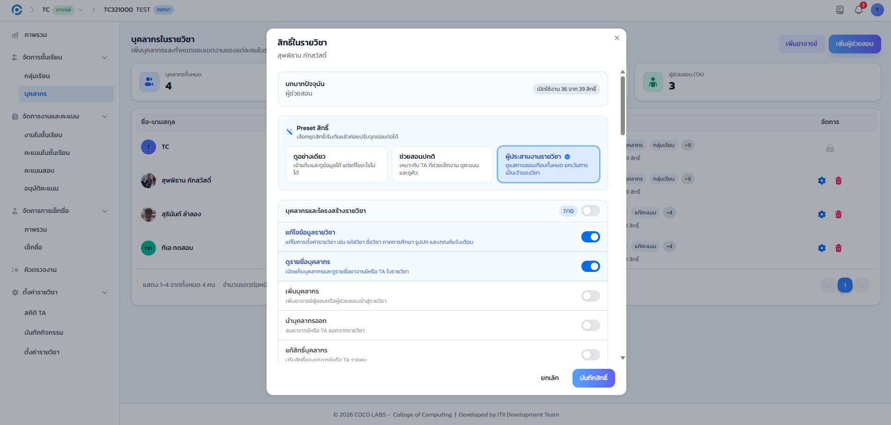
ตัวเลขกำกับด้านบนของหน้าต่างจะปรับตามจำนวนสิทธิ์ที่เปิดใช้งานอยู่จริงเสมอ ไม่ว่าจะเลือกจาก Preset หรือปรับรายข้อเอง
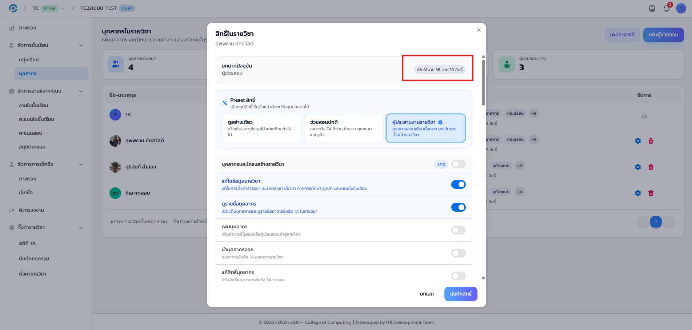
6.6 บันทึกสิทธิ์#
- ตรวจสอบสิทธิ์ที่เปิดไว้อีกครั้ง แล้วคลิกปุ่ม บันทึกสิทธิ์
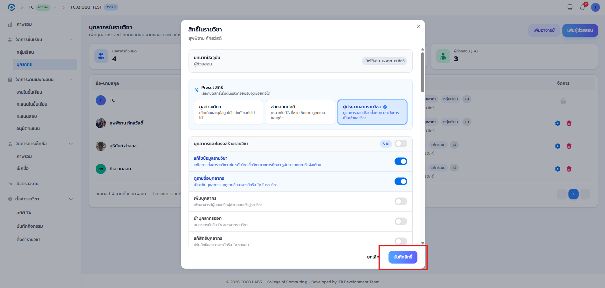
แนะนำให้เริ่มจากการมอบสิทธิ์เท่าที่จำเป็นต่อการทำงานจริง แล้วจึงเพิ่มสิทธิ์ภายหลังเมื่อจำเป็น เพื่อความปลอดภัยของข้อมูลในรายวิชา